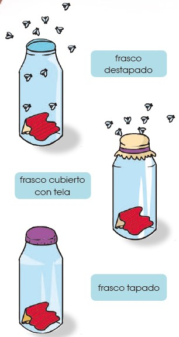
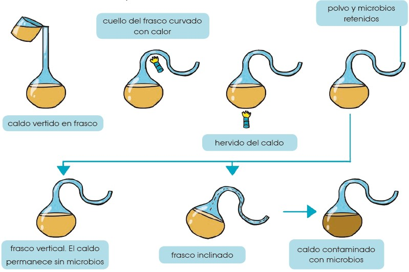
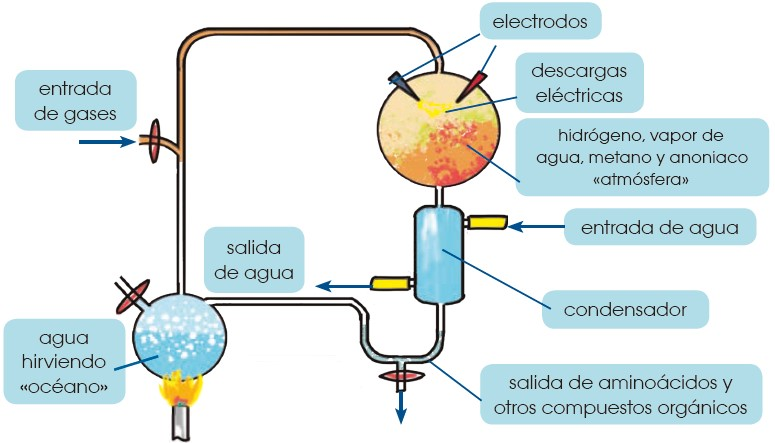
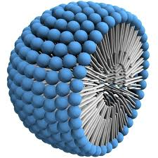

5 Teorías sobre el origen de la vida
Existen varias hipótesis de cómo se generó la vida en nuestro planeta. A continuación, repasaremos algunas de ellas.
Una de las teorías planteadas sobre el origen de la vida es el creacionismo, donde se propone que todos los seres vivos provienen de un creador divino. Sin embargo, esta teoría no se puede probar a través del método científico.
5.1 La generación espontánea
La palabra biología proviene del griego bios que significa ‘vida’ y logos que significa ‘estudio’. Por lo tanto, podemos definir a la biología como la ciencia que estudia los seres vivos. Ya hemos visto la principal teoría sobre el origen de la Tierra, pero ¿cuándo y cómo apareció la vida?
Durante la Edad Media y hasta el siglo XVI predominaba la idea de que los seres vivos eran creados por un poder divino. Sin embargo, ya en el siglo XVII, comenzó a tomar fuerza una idea que ya había surgido en pueblos de la Antigüedad: que los organismos vivos aparecían por generación espontánea. La teoría de la generación espontánea mantiene el pensamiento de que ciertos seres vivos, como insectos, gusanos o ratones, se originan de forma repentina a partir de materia inorgánica.
En 1668, Francesco Redi realizó un experimento con el objetivo de refutar la teoría de la generación espontánea. Para ello, puso carne en descomposición en distintas bandejas, una de ella tapada con una tapa, otra cubierta por una tela y otra totalmente descubierta. Según la teoría de la generación espontánea las larvas aparecerían de forma repentina, pero Redi demostró que las larvas solo aparecían en la carne sin tapar, ya que en el resto las moscas no podían depositar los huevos.

5.2 Pasteur y los matraces de cuello de cisne
Con el experimento de Redi, quedó en evidencia que los organismos macroscópicos no podían surgir por generación espontánea, pese a ello, durante el siglo XVIII aún se creía en la generación espontánea de los microorganismos. Según las creencias de la época, simplemente poniendo sustancias en descomposición en un lugar cálido, los microorganismos aparecían en el caldo de cultivo. La controversia duró hasta 1864 cuando Louis Pasteur presentó su experimento en el cual demostró que los microorganismos están presentes en el aire y no se generan de forma espontánea.
En sus experimentos, Pasteur utilizó matraces de cuello de cisne, matraces modificados para conseguir que pasara el oxígeno (solo indispensable para la vida) pero que impedían que las bacterias pasaran ya que quedaban atrapadas en las curvas del cuello del matraz.
Pasteur demostró que si hervía el líquido de los matraces y no se manipulaba el cuello, no aparecía ningún organismo. Sin embargo, si se giraba el matraz o se rompía el cuello del mismo, aparecían microorganismos en el caldo de cultivo, pero no porque se generaran espontáneamente, sino porque estos se encuentran en el aire. Después de este experimento, quedó claro para toda la comunidad científica que los organismos no aparecían de forma repentina y la teoría de la generación espontánea quedó totalmente sin piso.

5.3 Teoría de la evolución química
Después de los experimentos de Pasteur, quedó claro que la vida no aparecía de forma espontánea, pero seguía sin existir una teoría clara que explicara el posible origen de la vida. Esto fue así hasta 1924 cuando A. I. Oparin y J. B. S. Haldane, de forma independiente, propusieron un marco teórico en el que la vida tuvo que desarrollarse en la Tierra, gracias al cual ya podrían realizarse experimentos que aceptaran o refutaran la teoría.
Tanto Oparin como Haldane propusieron la idea de que, para conocer cómo se originó la vida en la Tierra, debían plantearse las condiciones que existían en la Tierra en ese momento, es decir, hace aproximadamente 3500 millones de años. Estas condiciones eran totalmente diferentes a las que conocemos actualmente, ya que existía una atmósfera reductora (sin oxígeno libre o con muy poco oxígeno), altas temperaturas y grandes cantidades de descargas eléctricas en forma de rayos.
Haldane fue el primero en hablar de un caldo primordial, haciendo referencia al océano que cubriría gran parte de la Tierra en aquella época. En ese caldo, aparecería una enorme cantidad de moléculas orgánicas formadas a partir de moléculas inorgánicas, simplemente desde la energía que se liberaba sobre la Tierra. Del mismo modo, Oparin propuso que las altas temperaturas junto con la radiación ultravioleta y las descargas eléctricas que ocurrían en la atmósfera debido a las tormentas, provocarían una reacción química de los compuestos inorgánicos que darían lugar a los compuestos orgánicos. Esto es lo que conocemos como la evolución química.
Las grandes moléculas orgánicas que se formaron por evolución química debieron seguir evolucionando en moléculas más complejas, hasta que quedara rodeada por una membrana, fuera capaz de autorreplicarse, y diera origen a la vida celular similar a la que conocemos hoy en día.
Las teorías propuestas por Oparin y Haldane no fueron totalmente aceptadas por la comunidad científica, en vista de que recordaban demasiado a la teoría de la generación espontánea. Sin embargo, en 1953, se llevó a cabo un experimento que demostró la viabilidad de la teoría de la evolución química.
Basándose en las teorías de Oparin y Haldane, el científico Stanley L. Miller ideó un experimento que simulara las condiciones terrestres de hace 3 500 millones de años para comprobar si era posible la aparición de moléculas orgánicas a partir de inorgánicas.
Para ello Miller mezcló en un recipiente cerrado los gases que supuestamente existían en la atmósfera primitiva: metano, amoniaco, hidrógeno y vapor de agua. Esta mezcla de gases fue sometida a temperaturas de 80 °C y sobre ella se aplicaron descargas eléctricas durante una semana. Pasado este tiempo, se observó que, disueltos en agua, aparecían varios aminoácidos, moléculas constituyentes de las proteínas. En experimentos posteriores, se descubrió que también se podía obtener uracilo y citosina, moléculas que forman parte del ADN y ARN.

Gracias a este experimento, se concluyó que, si las condiciones de la Tierra eran realmente las que se habían reproducido, la síntesis de compuestos orgánicos a partir de elementos y compuestos inorgánicos sencillos era posible.
Muchos científicos han rechazado esta teoría, puesto que es muy posible que las condiciones en la Tierra primitiva no fueran las planteadas en el experimento de Miller. Sin embargo, durante la segunda mitad del siglo XX se han realizado numerosos experimentos que han modificado las condiciones iniciales, como el experimento realizado por Joan Oró en 1960, en el que, a partir de cianuro de hidrógeno (constituyente de las nubes interestelares y los núcleos de los cometas), obtuvo adenina, compuesto de gran importancia en el ADN.
Aún existen muchos interrogantes sobre las condiciones de la Tierra hace miles de millones de años, pero sí sabemos con seguridad que puede existir una evolución química que forme moléculas orgánicas a partir de inorgánicas, y esto es uno de los posibles orígenes de la vida en nuestro planeta.
Una vez que se hubieran formado las moléculas orgánicas, estas deberían quedar rodeadas por una membrana que las aislara del medio externo y deberían ser capaces de autorreplicarse, pero ¿cómo puede ocurrir esto?
¿Cómo sucede un aislamiento entre un medio externo y uno interno?
El aislamiento del medio exterior proporciona cierta protección frente a los efectos adversos del entorno, y esto permite que en el medio interno se mantengan concentraciones elevadas de componentes que de otra manera se difundirían y dispersarían. Las sustancias, cuando se hallan en mayor concentración pueden reaccionar más rápido y aumentar su eficacia en la producción de polímeros y otros tipos de reacciones químicas.
En sus experiencias, Oparin observó que, cuando se mezclan con agua, algunos polímeros forman unas pequeñas gotitas (de hasta quinientas micras de diámetro), denominadas coacervados o micelas. Estas microesferas sirven para imaginar el comportamiento de gotitas similares que pudieron haberse producido.

Actualmente, las teorías se dirigen a la búsqueda de moléculas que combinan en su estructura una parte hidrofóbica y una parte hidrofílica. Estas moléculas, en contacto con el agua, forman vesículas membranosas (sacos llenos de líquido) que crecen y se dividen.
¿Cómo se originó la capacidad de reproducción?
Este punto es aún confuso. Si las vesículas contuvieran alguna molécula con capacidad informativa, estaríamos ante el precursor de una célula. La capacidad reproductiva debió desarrollarse paralelamente a la capacidad de sintetizar sustancias y la de obtener energía para la construcción de las propias estructuras.
El flujo de información genética, tal como funciona hoy día, es el paso de ADN a ARN y de este a proteínas. Y aunque se necesita ADN para producir proteínas, también necesitamos para transcribir, traducir, replicar, etc. Por tanto, ¿qué macromolécula fue primero: las proteínas o el ADN?
Según diversas hipótesis, el ARN surgió antes que el ADN y las proteínas en las primeras etapas de la evolución. El ARN controlaría la traducción de proteínas, y el ADN sería posterior. Así se intenta explicar de qué modo se obtuvieron las que se consideran las primeras células: seres similares a las células procariotas.
Sin embargo, estas teorías solo son respuestas provisionales. Con toda seguridad, el desarrollo de nuevas líneas de investigación puede modificar cualquiera de los planteamientos anteriores y posiblemente nos acerquemos, cada vez más, al conocimiento del origen de la vida.